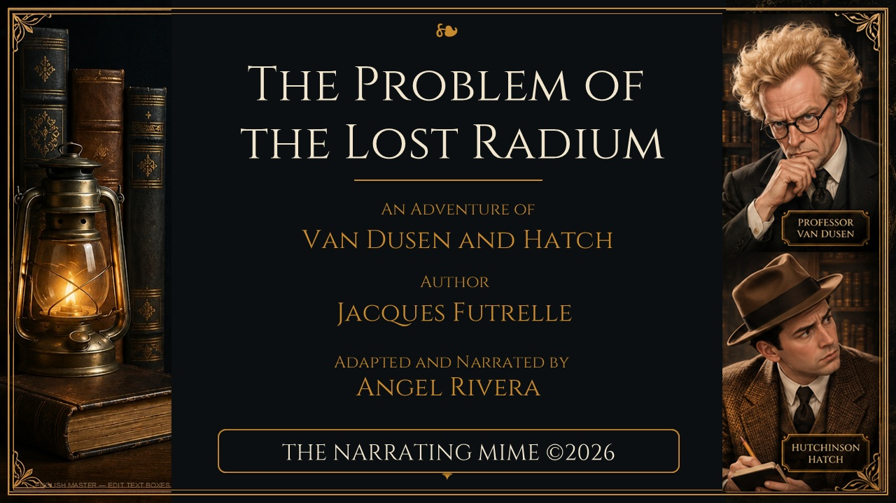

The Problem of the Lost Radium
A Professor Augustus S. F. X. Van Dusen Mystery
Professor Van Dusen, the famous Thinking Machine, investigates a mysterious disappearance involving a valuable quantity of radium.
Explore This NarrationPublic Domain Narrations
Welcome to The Narrating Mime, a collection of narrated public-domain stories.
Here you can listen to classic stories, read their source texts, explore translations, and discover additional information about the works and their authors.

A Professor Augustus S. F. X. Van Dusen Mystery
Professor Van Dusen, the famous Thinking Machine, investigates a mysterious disappearance involving a valuable quantity of radium.
Explore This NarrationListen to narrated public-domain stories and explore their individual pages.
Explore NarrationsRead selected source texts online and download them in different formats.
Explore Source TextsDiscover additional information, observations, and articles related to the stories.
Visit the Blog